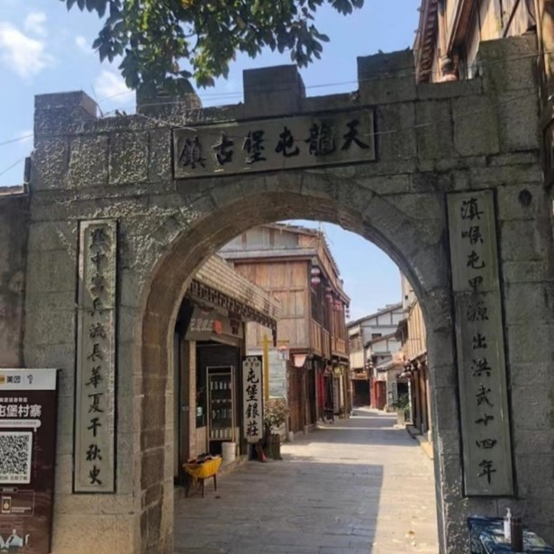

地理位置
天龙屯堡古镇位于贵州省西部安顺市平坝区，喀斯特地貌大山深处，有天台山、龙眼山两山脉，距贵阳市72公里。这里地处西进云南的咽喉之地，在元代就是历史上有名的顺元古驿道上的重要驿站，名“饭笼驿”。明初时，朱元璋调北镇南，在这里大量屯兵，兵来自江浙汉族，本世纪初被当地儒士改名为“天龙屯堡”
气候特征
雨量充沛:年平均降雨量约为1360毫米。
温和的气温:年平均气温大约为14℃，冬无严寒，夏无酷暑。
清新的气候:这种气候类型还以凉爽、湿润和清新著称，太阳辐射较低。
显著的山谷风:安顺地处贵州高原苗岭山脊线上，山谷风明显，夏季风多，无闷热感。
丰富的植被和负氧离子:安顺市森林覆盖率较高，空气质量优良，空气中负氧离子含量高，有利于健康和休闲。
